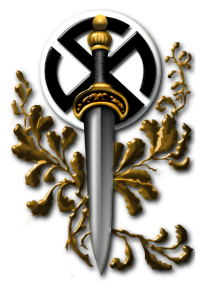
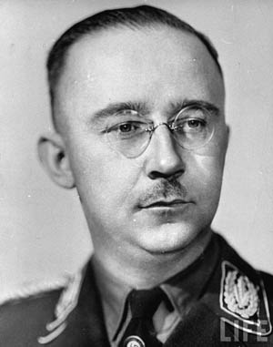
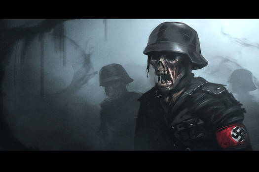
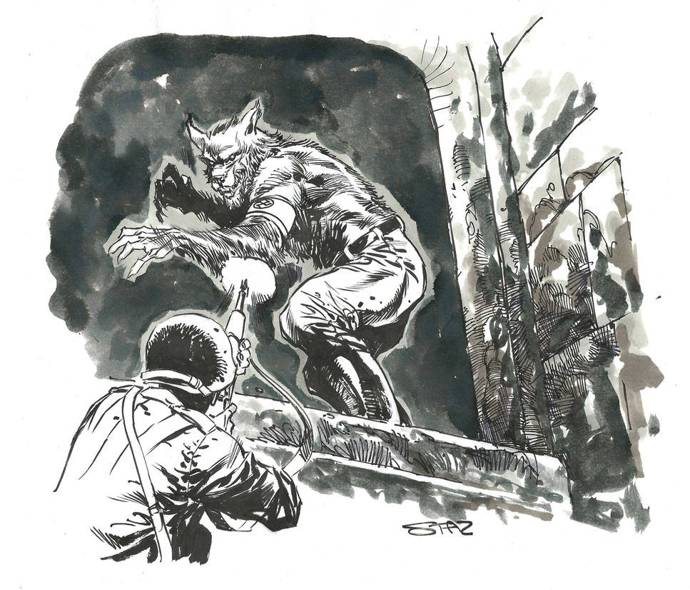
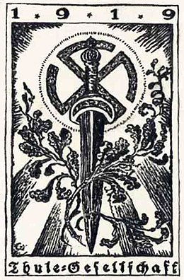

La Sociedad Vril es una organización envuelta en misterio y teorías conspirativas, que ha capturado la imaginación popular como un supuesto grupo esotérico relacionado con el nazismo. Según estas teorías, la sociedad fue fundada en la década de 1910 o 1920 en Alemania y estaba vinculada al estudio de poderes ocultos, energía cósmica (conocida como *Vril*) y tecnologías avanzadas. Inspirada por la novela *The Coming Race* de Edward Bulwer-Lytton, que describe una raza subterránea que domina una fuerza llamada Vril, la sociedad habría buscado utilizar esta energía para alcanzar la iluminación espiritual, crear tecnologías avanzadas o incluso establecer contacto con civilizaciones extraterrestres. Algunas teorías afirman que la Sociedad Vril influyó en ideologías nazis y que sus miembros colaboraron con organizaciones como la Sociedad Thule. Sin embargo, no existe evidencia histórica sólida que confirme la existencia de la Sociedad Vril tal como se describe en estos relatos. La mayoría de estas ideas se originaron en textos de posguerra y han sido amplificadas por la literatura de conspiración y la ciencia ficción, como en los trabajos de Louis Pauwels y Jacques Bergier en *El retorno de los brujos*. Aunque fascinante, la historia de la Sociedad Vril se encuentra más en el ámbito del mito que en el de la realidad histórica.

 El ocultismo nazi se refiere al conjunto de creencias esotéricas, prácticas místicas e interpretaciones pseudocientíficas que influyeron en la ideología del Tercer Reich y en algunos de sus líderes más prominentes, como Heinrich Himmler.  Aunque Adolf Hitler personalmente no mostraba un interés significativo en lo esotérico, figuras clave del régimen adoptaron aspectos del ocultismo para justificar y reforzar la supremacía racial, el pangermanismo y su visión del mundo. Himmler, por ejemplo, fundó la Ahnenerbe, una organización encargada de investigar las raíces míticas y supuestamente "arianas" de la raza germánica, recurriendo a leyendas, simbolismos antiguos como las runas, y expediciones a lugares como el Tíbet en busca de pruebas de una civilización arcaica superior. Este enfoque sincrético mezclaba ideas de misticismo nórdico, astrología, simbolismo pagano y reinterpretaciones de la historia. El uso de símbolos como la esvástica, tomada de tradiciones antiguas, y los rituales en torno a las SS reflejan esta influencia. Sin embargo, muchos historiadores consideran que el "ocultismo nazi" fue más un instrumento de propaganda y manipulación ideológica que una doctrina espiritual sincera. El ocultismo nazi combina historia, mitología, ideología y esoterismo, y estuvo presente en ciertos aspectos del régimen del Tercer Reich (1933-1945). Aunque Adolf Hitler era escéptico sobre estas ideas, figuras como Heinrich Himmler, jefe de la SS, mostraron un gran interés en ellas, utilizándolas para justificar y reforzar la ideología racial nazi. Inspirados por la mitología germánica y corrientes pseudocientíficas como la ariosofía, que  exaltaban a los antiguos pueblos germánicos como la supuesta "raza aria pura", los nazis reinterpretaron mitos nórdicos y utilizaron símbolos esotéricos como la esvástica y las runas. Sociedades ocultistas como la Sociedad Thule, que combinaban misticismo con ideas raciales extremistas, influyeron indirectamente en los primeros años del movimiento nazi, aunque su conexión directa fue limitada. Himmler lideró la SS como una orden casi religiosa, incorporando rituales, símbolos y un fuerte componente místico, transformando lugares como el castillo de Wewelsburg en centros espirituales cargados de simbología esotérica. Además, a través del instituto Ahnenerbe, patrocinó expediciones arqueológicas y  pseudocientíficas en busca de pruebas para sustentar sus creencias raciales y místicas, como las raíces míticas de los arios, incluyendo búsquedas de artefactos como el Santo Grial y la Lanza del Destino. Estas ideas también se nutrieron de influencias externas, como las teorías teosóficas de Helena Blavatsky, que postulaban la existencia de razas raíz y ciclos históricos. Aunque el interés en el ocultismo no tuvo un impacto decisivo en las políticas del régimen, sí ayudó a reforzar la propaganda nazi y otorgar un halo místico a sus ideales. Este fascinante aspecto del nazismo mezcla realidad y mitología, dejando un legado controvertido en la historia.
El Ahnenerbe (cuyo nombre completo en alemán era "Deutsches Ahnenerbe – Studiengesellschaft für Geistesurgeschichte, Deutsches Erbe", que se traduce como "Sociedad de Investigación y Enseñanza sobre la Herencia Ancestral Alemana") fue una organización creada en 1935 por Heinrich Himmler, Herman Wirth y Walther Darré. Esta institución formaba parte de las SS (Schutzstaffel) y tenía como objetivo principal investigar la supuesta herencia cultural, histórica y racial de la raza aria, basándose en teorías pseudocientíficas y esotéricas.

La Sociedad Thule, fundada en 1918 en Alemania por Rudolf von Sebottendorff, fue una organización esotérica y ocultista que combinaba mitología nórdica, misticismo germánico y teorías racistas con un fuerte nacionalismo. Su nombre se inspiraba en Thule, una isla mítica mencionada en textos antiguos como el supuesto origen de la raza aria. Este grupo promovía la creencia en la superioridad aria, teorías conspirativas antisemitas y una interpretación mística de la historia germánica, que más tarde influiría en el simbolismo y las ideas del nacionalsocialismo. Aunque Adolf Hitler nunca fue miembro, la sociedad tuvo vínculos con los inicios del Partido Nacionalsocialista Alemán (NSDAP) y algunos de sus miembros, como Dietrich Eckart, desempeñaron un papel importante en su desarrollo. La Sociedad Thule combinaba prácticas esotéricas con actividades políticas, celebrando reuniones rituales y promoviendo símbolos como la esvástica, que posteriormente fueron adoptados por el régimen nazi. Sin embargo, con la consolidación del poder nazi, la influencia de Thule disminuyó y fue marginada, ya que el régimen centralizó el control ideológico. Su legado sirve como ejemplo de cómo el ocultismo y las ideas pseudocientíficas pueden alimentar movimientos extremistas.
